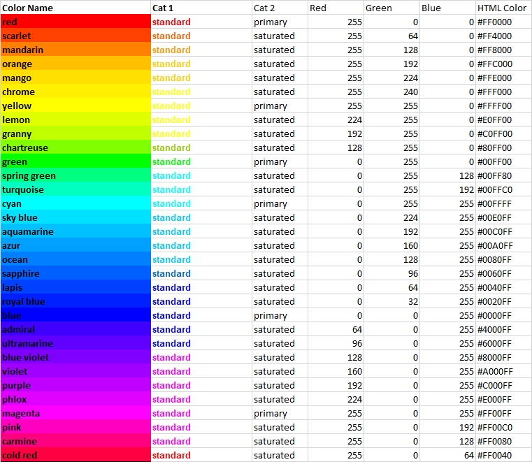
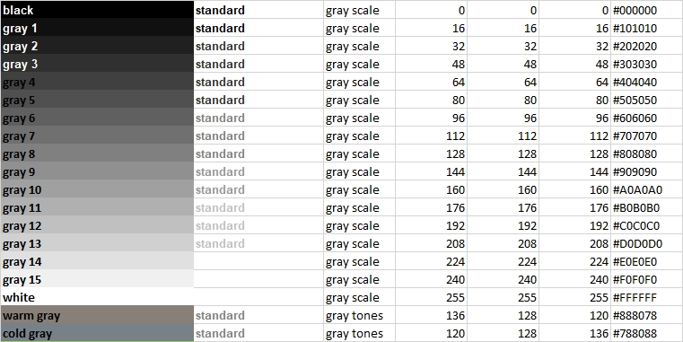
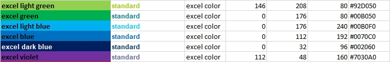
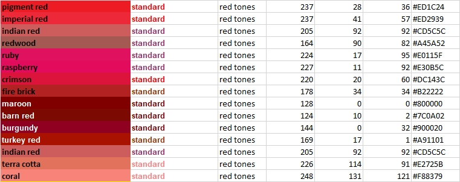
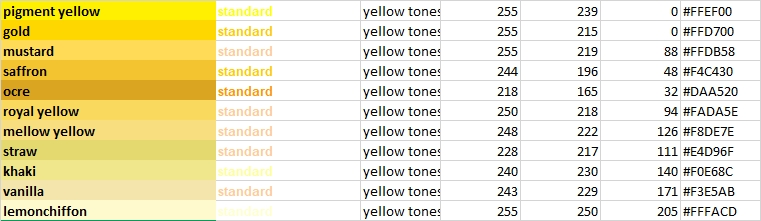
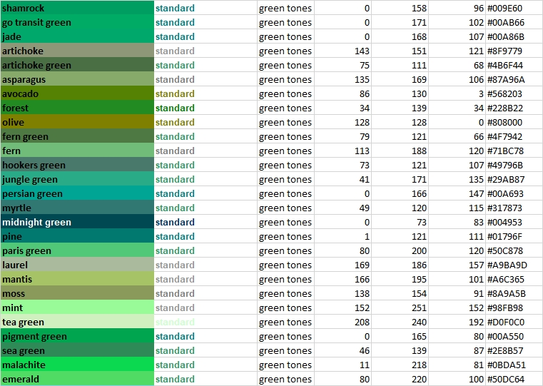
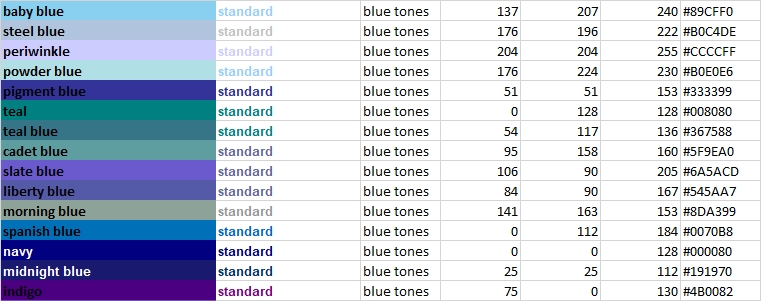
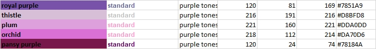
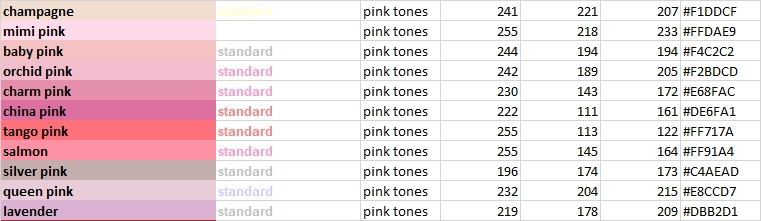
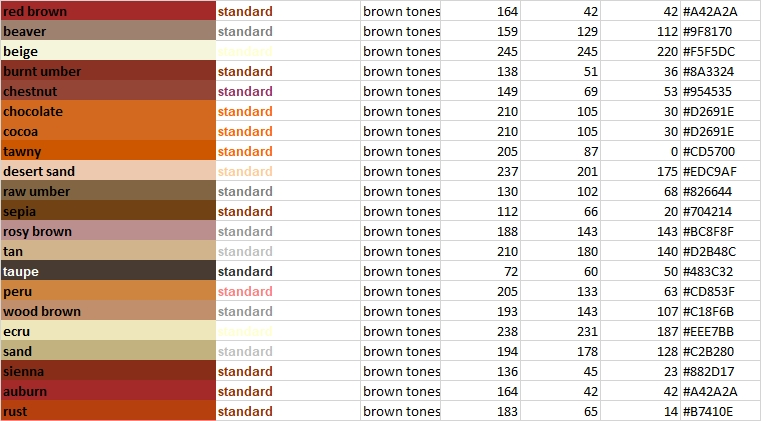

Touring the Vivid Color Circle

Shades of Gray

Excel Colors
The following colors are found in the standard color template in Microsoft Excel and other Office tools. For red and yellow, use the names 'red' and 'yellow'.

Shades of Red

Shades of Yellow

Shades of Green

Shades of Blue

Shades of Purple

Shades of Pink

Shades of Brown
